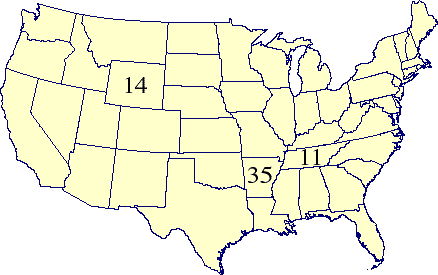
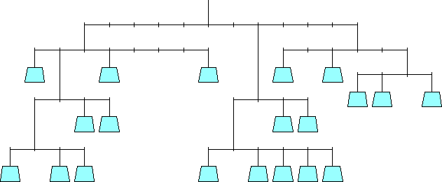
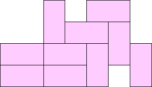

Perplex City Cards
1. Road Trip: Find a driving route that visits each state in the continental United States exactly once. You must visit Tennessee 11th, Wyoming 14th, and Arkansas 35th.
|  | | 
|
2. Weighs and Means: Place the numbers 1-20 in the 20 weights shown below so that each fulcrum balances, with an equal amount of torque on each side.
|  | |
|
3. Domino Dilemma: Place the 10 dominoes (1-0, 2-0, 2-1, 3-0, 3-1, 3-2, 4-0, 4-1, 4-2, 4-3) in the diagram below so that as we read down in each column, the numbers are decreasing, and as we read across in each row, every pair of adjacent numbers is different.
|  | |
|